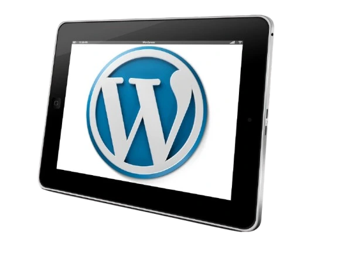
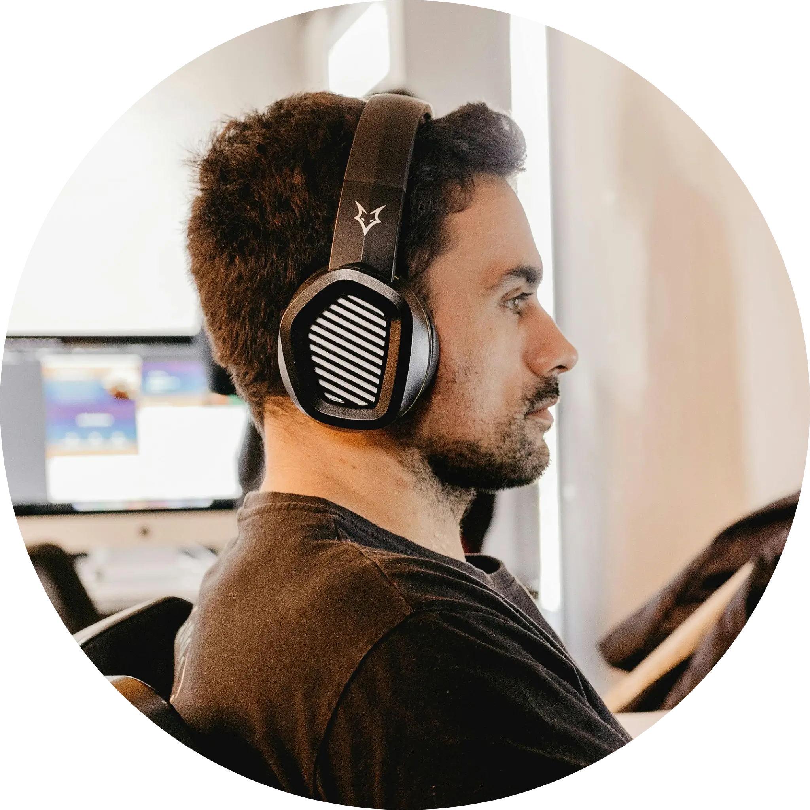

Quem Somos
Somos uma equipe de especialistas em WordPress, dedicada a manutenção, atualização e otimização de sites para empresas que desejam resultados reais e crescimento digital.
Atuamos em toda a gestão de WordPress: atualização de temas e plugins, correção de incompatibilidades, otimização de performance, SEO avançado, produção de conteúdo para blogs e rastreio de métricas no Google Analytics. Nosso objetivo é manter seu site rápido, seguro e bem posicionado nos motores de busca.
Com anos de experiência e dezenas de projetos concluídos, entregamos soluções personalizadas para que empresas aumentem tráfego, engajamento e conversões.
O seu suporte é feito 100% com nossos atendentes humanos, sempre disponíveis para te ajudar e tirar dúvidas, sem ser necessário falar com robôs.

Nossa Expertise
Especializados em WordPress, garantimos sites seguros, rápidos e confiáveis. Atuamos com correção de lentidão, revisões de compatibilidade, atualizações de plugins e temas, além de implementar SEO técnico e estratégico para melhorar seu posicionamento no Google.
+20 mil
clientes atendidos
90%
média de satisfação
Cases de Sucesso
Atendemos empresas de diversos setores, recuperando sites invadidos, corrigindo erros críticos, atualizando conteúdos e garantindo performance máxima. Nosso trabalho ajuda negócios a conquistar resultados reais na web.
Veja nossos casesDepoimento de nossos clientes
Juliana Batiste
Meu site estava lento e caindo nas buscas do Google. A equipe de especialistas em WordPress fez uma análise completa, otimizou a performance e aplicou melhorias de SEO. Hoje meu site carrega em segundos e voltei a ter clientes!
Ricardo Menezes
Eu tinha medo de atualizar os plugins e o tema do meu WordPress por risco de quebrar tudo. A consultoria resolveu tudo com segurança, corrigiu erros antigos e ainda melhorou a responsividade do site. Recomendo demais!
Fernanda Oliveira
Meu site foi invadido e eu achei que tinha perdido tudo. Os desenvolvedores restauraram o site, reforçaram a segurança e configuraram backups automáticos. Hoje posso focar no meu negócio sem me preocupar com ataques.
Nossos especialistas
Conheça alguns dos engenheiros de software especialistas que atuam diretamente para melhorar e manter os projetos de nossos clientes.



Fale com um especialista agora!
Entre em contatoServiços Oferecidos
Conheça nossos serviços disponíveis especializados em WordPress
Atualização de WordPress
Atualizamos sua versão do WordPress para garantir segurança, estabilidade e compatibilidade com plugins e temas.
Precisa de ajuda com seu site?
Receba um orçamento gratuitamente!
Solicite um OrçamentoPerguntas Frequentes
Por que meu site WordPress está lento?
Lentidão pode ser causada por plugins desatualizados, temas mal otimizados ou excesso de conteúdo não cacheado. Realizamos análise e otimização completa para acelerar seu site.
Como sei se meu site precisa de atualização?
Se você não atualiza o WordPress, plugins ou temas regularmente, seu site fica vulnerável a falhas e invasões. Podemos revisar e atualizar tudo de forma segura.
Posso personalizar meu tema WordPress?
Sim! Realizamos ajustes de design, cores, layouts e funcionalidades sem comprometer a segurança ou performance do site.
Vocês oferecem suporte em SEO?
Sim! Fazemos revisão completa de SEO técnico e on-page, além de otimização de conteúdos para melhorar o ranqueamento no Google.
Meu site foi hackeado, vocês podem restaurar?
Sim. Restauramos seu site WordPress caso haja backups configurados, corrigimos vulnerabilidades e implementamos medidas de proteção para evitar novos ataques.
Contato
Entre em contato pelo WhatsApp ou e-mail para solicitar orçamento, consultoria em SEO, desenvolvimento WordPress ou suporte completo em sites corporativos.